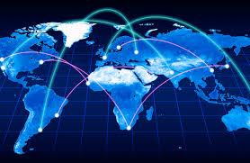

4.1 La economía circular
La economía circular es un modelo de producción y consumo que se basa en optimizar los recursos disponibles, alargando al máximo la vida útil de los productos, materiales y recursos. En lugar de seguir el modelo tradicional de "producir, usar y desechar", este enfoque propone compartir, alquilar, reutilizar, reparar, renovar y reciclar todos los elementos posibles, reduciendo al mínimo la generación de residuos.
Esto significa que, por ejemplo, un producto que ya no se usa no se tira directamente, sino que puede ser reparado o reutilizado para otro fin. Cuando ya no puede cumplir su función, sus materiales pueden reciclarse y convertirse en materia prima para fabricar nuevos productos. Así, se crea un ciclo continuo en el que los recursos siguen aprovechándose en lugar de convertirse rápidamente en desechos.
El objetivo principal de la economía circular es minimizar el impacto ambiental y, al mismo tiempo, generar valor añadido a lo largo de todo el ciclo de vida de un producto. Este modelo no solo protege el medio ambiente, sino que también promueve la innovación, la eficiencia económica y la sostenibilidad a largo plazo.

4.1.2 Características de las 3R a las 7R
Modelo inicial: las 3R

Reducir: Minimizar el consumo de recursos.

Reutilizar: Volver a usar productos sin necesidad de tratarlos.

Reciclar: Transformar los residuos en nuevos productos.
Ampliación del modelo: las 7R
Rediseñar: Pensar productos desde su origen para ser sostenibles.

Reducir: Evitar el consumo innecesario.
Reutilizar: Usar nuevamente sin transformar.
Reparar: Arreglar antes de desechar.
Renovar: Actualizar partes del producto para alargar su vida.
Reciclar: Recuperar materiales de desecho.
Recuperar: Obtener energía o recursos de residuos que no se pueden reciclar.
4.2 Modelos de producción y economía lineal
La economía actual se basa en un modelo de producción masiva y consumo desmedido, lo que genera grandes cantidades de residuos y presión sobre los recursos naturales. Este modelo es insostenible a largo plazo.

De la Economia Lineal a la Circular: una mirada al consumo responsable
- Recursos finitos usados como infinitos
- Elevada producción de residuos
- Falta de consideración ambiental
- Cultura del descarte
4.2.2 Diferencias entre economía lineal y circular
Economía Linea:
- Uso único de materiales
- Desechos acumulativos
- Altas emisiones contaminantes
Economía Circular:
- Reutilización y reciclaje
- Cierre de ciclos de materiales
- Reducción de impacto ambiental

4.3 El consumismo
El consumismo es una tendencia cultural y económica que promueve la adquisición continua de bienes y servicios, más allá de las necesidades básicas.
Causas:
- Publicidad masiva
- Obsolescencia programada
- Presión social y cultural
- Créditos y facilidades de pago
Beneficios (percepciones):
- Dinamiza la economía
- Estimula la producción y el empleo
Desventajas:
- Generación excesiva de residuos
- Agotamiento de recursos naturales
- Aumento de emisiones contaminantes
Problemas sociales:
- Desigualdad en el acceso al consumo
- Ansiedad, estrés y frustración
- Deuda por consumo excesivo
Globalización:
La globalización ha expandido el consumismo a escala planetaria, homogeneizando gustos y aumentando la producción en masa
4.4 Economía verde
La economía verde es un modelo que busca el desarrollo económico sin deteriorar el medio ambiente. Promueve la eficiencia energética, energías limpias y una producción menos contaminante
Características:
- Uso eficiente de recursos
- Energías renovables
- Reducción de emisiones de carbono
- Empleos verdes
- Respeto a la biodiversidad
4.5 Ciclo de vida de un producto
El ciclo de vida de un producto incluye todas las etapas que atraviesa un bien desde su creación hasta su disposición final. Analizar cada fase permite identificar oportunidades para reducir el impacto ambiental.
Fases del Ciclo de Vida:
- Extracción de materias primas: Obtención de recursos naturales.
- Producción: Fabricación y ensamblaje de productos
- Distribución: Transporte y entrega del producto
- Distribución: Transporte y entrega del producto
- Fin de vida: Reutilización, reciclaje o disposición final.
4.5.1 Obsolescencia programada
Economía Lineal vs. Economía Verde:
- Modelo tradicional vs. Modelo sostenible
- Uso ilimitado de recursos vs. Uso racional
- Genera grandes residuos vs. Minimiza residuos
- Alta huella de carbono vs. Baja huella de carbono
- No considera impacto ambiental vs. Considera impacto en cada etapa